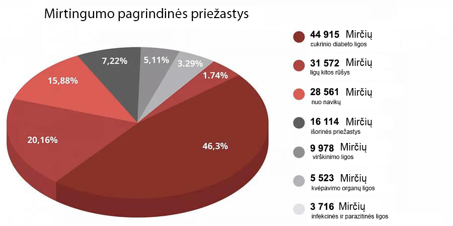

DRAUDŽIAMAS IŠRADIMAS:Per 7 savaites Dirbtiniai raudoni kraujo kūneliai išgelbėja nuo diabeto, sumažina cukraus kiekį ir neįtikėtinai sustiprina imunitetą!

Filmuojant eilinę laidą įvyko konfūzas, kuris suteršė medicinos “žvaigždžių“ vardus. Vienas iš pakviestų ekspertų netikėtai pradėjo kalbėti ne pagal scenarijų. Savo pareiškimu jis nustebino žiūrovus studijoje. Bet ypač kritikuojami buvo medicinos pareigūnai.
Kardiochirurgas atvirai pareiškė:«Jūs užkemšate eterį informacija apie koronavirusą, bet nekreipiate dėmesio į problemą, nuo kurios kasmet kankinasi daugiau nei 1.3 milijono žmonių! Kodėl niekas nekalba apie endokrininius susirgimus? Kodėl jūs visi tylite, kad jau egzistuoja vaistas, išgelbėjantis nuo diabeto?»
Cukrinis diabetas! Va kas yra pagrindinis žmogžudys. O jūs visi apsimetate, lyg taip ir turi būti. Nepastebite pažangų vaistų, kurie sprendžia šią problemą.
Diebetas laikomas viena pavojingiausių ligų. Palyginant su dauguma kitų ligų, kuriomis serga žmonės, jis nesukelia kažkokių laikinų problemų su sveikata, o vystosi vis labiau, nuolat, po truputį nužudydamas žmogų. Cukrinis diabetas – milijonų kankinančių mirčių priežastis. Tai lyg uždelsto veikimo bomba, kuri nebūtinai suveiks iš karto, bet su 100% tikimybe sprogs anksčiau ar vėliau. Be to, situacija yra tokia, kad nėra jokių simptomų, kurie nurodytų į mirtinas komplikacijas. Šiandian žmogus yra sveikas, o rytoj jam atims ranką, pradeda pūti koja arba vystosi vėžio navikas galvoje. O jūs apgaudinėjate žmones ir imatės neregėtų priemonių prieš beveik besimptominį susirgimą, kuris, be to, pasirodė ne dabar, ir kažin ar išnyks.

“Žmonės miršta ne nuo viruso, o nuo diabeto ir jo sukeltų komplikacijų! Įsiminkite tai visam laikui!” — teigė Jurga Stašienė, viena iš pakviestų ekspertų, tačiau kiti dalyviai tiesiog užpuolė ją, užkišdami jai burną.
Statistika šokiruoja! Epidemija nušienavo 25 tūkstančius gyvybių, o nuo cukrinio diabeto per tą patį laiką numirė beveik 50 000 žmonių.
O pats juokingiausias ir liūdniausias dalykas yra tame, kad 75.87% sunkiųjų atvejų, kai atsiranda komplikacijos nuo viruso, tai žmonės su diabetu! Jeigu jie neturėtų šio susirgimo, kuris negailestingai žlugdo imuninę sistemą, jie sirgtų koronavirusu be simptomų. O dabar tai pagrindinė rizikos grupė. Ir vėl, apie tai niekas nekalba, nes iš karto pasirodys klausimas – o ką jūs darote, kad išgydytumėte šį klastingą susirgimą?
Studijoje prasidėjo sumišimas. Ekspertai – Vilniaus klinikų gydytojai pradėjo gynčytis, pertardami vienas kitą. Eterį skubiai nutraukė ir greitai įjungė reklaminį bloką. O Jurgą apsaugininkai išvarė iš studijos.
Iš eterio šis epizodas buvo nuimtas. Tačiau žiūrovai studijoje įsiminė šį incidentą ilgam laikui.
Mes nusprendėme atlikti savo tyrimą ir suradome šią ekspertę.

Jurga Stašienė – aukščiausiosios kategorijos gydytoja, medicinos mokslų
kandidatė, profesorė, vyriausioji specialistė cukrinio diabeto kraujagyslių komplikacijų
srityje.
– Jurga, apie skandalą televizijoje žino, atrodo, visi jūsų kolegos. Kodėl jūs nepabijojote tokio poelgio?
– Aš supratau rizikas, bet aš tiesiog nebegalėjau tylėti. Negalima pilstyti iš tuščio į kiaurą ir nesiūlyti konkretaus sprendimo. Aš esu gydytoja, aš daviau Hipokrato priesaiką ir laikuosi jos.
Aš džiaugiuosi, kad jūs susisiekėte su manimi, nes turėsiu galimybę pakartoti mano žodžius ir jūsų skaitytojams. Pandemija pasibaigs, bus vakcina, pasaulis tai pergyvens, kaip ir bet kokią epidemiją iki šiol. Tačiau godumo ir parsidavėliškumo virusas paliks su mumis, bijau, kad visam laikui. Nuo šio viruso vakcinos kol kas neišradėme.
– Apie ką jūs konkrečiai kalbate?
– Apie tai, kad egzistuoja susirgimai, kuriuos mūsų medicinos atveju gydomi daug metų. Aš dirbu su endokrininiais susirgimais, užsiimu reabilitavimu tų žmonių, kurie patyrė cukrinio diabeto sukeltas sunkiausias komplikacijas. Ir mano srityje apgavimas yra visur.
Įsitikinau, kad gydant atramos-judėjimo sistemą, virškinimo traktą, žodžiu, bet kokią ligą galima veikti pagal simptomus, palengvinant ligonio būklę, bet neišgydant iki galo. Уверена, что также и в лечении опорно-двигательного аппарата, ЖКТ, да что угодно можно лечить по симптомам, облегчая состояние, но не возвращая полного здоровья.
Ir dėl to kaltos farmacijos korporacijos ir jų medicinos atstovai, kurie papirkinėja gydytojus po visą šalį. O dabar, kai iš visur gąsdina žmones – įmonėms tai tiesiog puotavimas. Galima pardavinėti testus, sanitaizerius, vaistus kiekvienam simptomui atskirai. O mirties atveju apkaltinti epidemiją. Aš matau visą tai ir man bjauru.

Cukrinio diabeto mūsų šalyje negydo
– Reiškia, jūs norite pasakyti, kad visi šiuolaikiniai vaistai nuo diabeto nėra efektyvūs?
Vaistai nuo diabeto, kurie oficialiai paskiriami žmonėms, atlieka vieną svarbią funkciją – perpumpuoja pinigus iš ligonių kišenių į medicinos oligarchų kišenes.
Tai yra legalizuoti narkotikai. Pagalvokite patys. Ligonis vartoja tabletę, jo būklė gerėja. Preparato veikimas nutraukiamas ir cukraus kiekis vėl auga. Taip veikia visi narkotikai. Kad besijaustų gerai, reikia ieškoti naujos "dozės".
Supraskite svarbiausį dalyką: skubiomis situacijomis "cheminiai" preparatai yra reikalingi ir svarbūs. Pirmojo pasaulinio karo metu, pavyzdžiui, mūšio lauke naudodavo heroiną, kad sužeistieji nemirinėtų nuo skausmo šoko.
Tačiau jeigu vartoti tabletes nuolat, jos žlugdo organizmą. Taip pat kaip heroinas. Ne taip greitai, bet veikimo principas toks pats. O kad atsikratytumėte šalutinių poveikių, jums parduos dar tablečių. Ir dar. Ir dar. Kuo daugiau, tuo geriau vaistinėms ir farmacijos verslui.
– Bet žmonės vartoja vaistus ilgais metais
– Narkomanai taip pat gali gyventi gana ilgai. Ar tai tikras gyvenimas?
Kai šokinėja spaudimas. Kai neseni vyrai, truputį po to, kai jiems pakanka 50, susiduria su prostatitu ir praranda potenciją. Kai atsiranda lėtinis nuovargis, nutukimas, kojos pradeda paburkti, taip, kad tampa sunku vaikščioti, tirpsta rankų pirštai. Po to atsiranda virškinimo sutrikimai ir inkstų akmenys nuo druskų ir cukraus intensyvaus išsiskyrimo.
Kai kurios tabletės po ilgo vartojimo yra onkogeninės. Pažiūrėkite į vėžio susirgimų statistiką – va kur yra tikroji epidemija.
Aš net neminiu tokių smulkmenų, kaip miego sutrikimai, triukšmas ausyse, regėjimo praradimas. Išvardyti galima ilgai. O priežastis yra vienintelė – per didelis gliukozės kiekis kraujyje, o rezultatu – diabetas, kurio niekas negydo. Nors vaistas jau egzistuoja ir jis demonstruoja puikius rezultatus.
Vaistas nuo diabeto, kurio nebus vaistinėse
– Laidą filmuojant jūs bandėte papasakoti apie pažangų vaistą cukrinio diabeto gydymui, bet jus tiesiog išvarė iš studijos. Kas tai yra? Kodėl vaistinių atstovai reaguoja į jo pavadinimą lyg vampyrai į saulės šviesą?
– Aš pradėjau pasakoti apie biopreparatą« ». Tai yra unikalus vaistas iš gyvų augalinių vita molekulių.
– taip molekulinės biologijos centro išradimas. Jį dar dažnai vadina " Dirbtiniais raudonais kraujo kūneliais". Todėl, kad paskatina jaunų raudonų kraujo ląstelių gamybą, kurios pastiprina gliukozės skaidymo reakciją daugiau nei 7 kartus! Tai ir veda prie cukraus kiekio kraujyje normalizavimo.
normalizuoja viduląstelinę gliukozės apykaitą ilgams metams. Jo nereikia vartoti nuolat. Vos per 7 savaites jis padės atsikratyti diabeto, o cukraus kiekis kraujyje bus 4.5 mmol/l per kitus 5 metus.
Už kūrimą mūsų mokslininkų kolektyvas gavo tarptautinį apdovanojimą terapeutinės biologijos srityje. Už inovacinį išradimą gydant cukrinį diabetą.
Atrodo, po tokio pripažinimo vaistinės turėtų stovėti eilėje, kad gautų teisę pardavinėti . Valstybė turi užtikrinti sąlygas, kad šis preparatas būtų naudojamas kuo plačiau. Tačiau ne. Visiška, kapų tyla. Niekas lyg nepastebėjo išradimo.
O medicinos verslo atstovai ir visiškai neapkenčia šio preparato. Jie turi šimtus vaistų rūšių, pardavimų ir pajamų planus. O vienu vaistu atlikti šiuos planus neįmanoma. Po gydymo 7 savaičių žmonės pamiršta kelią į vaistinę.
Todėl su susijusi tokia neapykanta. Apjuodinti jį nepavyksta. Vis dėlto yra tarptautinis pripažinimas, sertifikatai, moksliniai straipsniai, tūkstančiai patenkintų pacientų. Todėl buvo pasirinkta boikoto strategija. Apsimesti lyg toks preparatas neegzistuoja. O kada aš pradėjau kalbėti apie jį eteryje, tai sukėlė atvirą agresiją prieš mane.
Organizmo išsigydymo paleidimas
– Kaip padeda ?
pagrindinis tikslas – atkurti kasos funkciją 100%. Tai yra fundamentas, ant kurio stovi jūsų sveikata.
atkuria kraujagysles per 3 stadijas:
- Atkuria insulino receptorius žmogaus kūno audiniuose, tokiu būdu normalizuojant insulino išdirbimą organizme
- Sumažina cukraus kiekį kraujyje po vartojimo pirmųjų dienų
- Atkuria "sudėtingo kalio" kiekį ir tuo pačiu metu generuoja specialiąsias imunines ląsteles, kurios paleidžia kasos regeneracijos procesą
paleidžia visų organizmo audinių regeneracijos ir atnaujinimo procesą, nuo vidaus organų iki kraujagyslių. Tai leidžia atsikratyti visų pažeidimų, kuriuos suspėjo patirti organizmas ligos metu.
Šis atsistatymo procesas vadinasi autoregeneracija. Šie mechanizmai sukurti gamtos, o yra katalizatorius, raktas, kuris "įjungia " autoregeneraciją.
Atsikratykite 7 ligų per 7 savaites
– Ką jūs gausite po gydymo kurso?
1. Gliukozės kiekio normalizavimas
Preparatas turi labai naudingą poveikį, būtent sumažina rezistenciją insulinui. Tai yra nuostabi savybė. Biologiškai aktyvūs komponentai įsiskverbia tiesiai į raumenų, riebalų ir kepenų ląsteles ir skatina jas tokiu būdu, kad jos pradėtų geriau reaguoti į hormono buvimą kraujyje. Medicinoje šis procesas vadinasi “antrinis ląstelių susidarymas“. Dėl to laikui bėgant ląstelės pradeda vartoti aktyvesnę gliukozę, kas veda prie jos koncentracijos kraujyje mažėjimo. Organizmui tai pats saugiausias būdas vartoti gliukozę.
2. Kraujagyslių atkūrimas
pagrindinis poveikis yra tame, kad jis ne tik pašalina cukrų iš kraujo, bet ir normalizuoja gliukozės kiekį. Jis taip pat ištirpdo cukrų, kuris jau pateko į kraują per kraujagyslių sieneles. Jos, lyg išsilaisvinusios nuo ledo, vėl turi galimybę ankštėti ir platėti. Ištirpsta trombai, išsivalo kraujagyslės. Atkuriami mažieji kapiliarai. Rezultatu žmogui nekyla arterinis spaudimas, išnyksta silpnumas ir nuovargis, gerėja žaizdų ir įpjovų sugydymas.
3. Odos, kaulų ir raumenų būklės pagerėjimas
Atkuriama net stipriai pažeista oda. Opos išnyksta, oda nebepūliuoja ir sausėja. Tas pats vyksta su kaulais, atkuriama jų normali sudėtis, jie nebėra trapūs. Atkūrimas vyksta visuose audiniuose, raumenys tampa elastingais.
4. Regėjimo aštrumo pagerėjimas
Net stipriai pažeistas regėjimas pradės po truputį atsikurti.
- Regėjimo aštrumas gerėja nuo 0.5 iki 2.1 vieneto.
- Normalizuojasi akių spaudimas
- Mažėja kataraktos simptomai
5. Perteklinio svorio atsikratymas
Perteklinis svoris – tai dalykas, kuris 4-5 kartus apsunkina sergančio cukriniu diabetu būklę. Todėl vienas iš poveikių – lieknėjimas. Tai vyksta dėl dviejų priežasčių. Pirma, ląstelės pradeda aktyviau paversti cukrų energija. O antra, komplekse yra stipriai koncentruotas ekstraktas Heliаnthus tuberоsus, kuris yra galingiausias natūralus riebalų degintojas.
6. Potencijos normalizavimas
Daugelis sergančių diabetų neturi potencijos. Vienas iš stebuklingų poveikų- testosterono kiekio normalizavimas ir sveikos potencijos atsikūrimas. Net garbingame amžiuje už 70 metų, vyrai su nuostaba pastebi, kad vyriška jėga grįžo pas juos.
7. Pradeda veikti imunitetas
Gerėja kaulų čiulpų kraujotaka, o jie gamina imunines ląsteles. Tai veda prie organizmo apsauginių jėgų stiprėjimo.
Imunitetas saugo ne tik nuo virusų. Stipraus imuniteto pagrindinė funkcija – apsauga nuo vėžinių ląstelių. Stiprus imunitetas laiku atpažįsta ir sunaikina vėžines ląsteles. Neleidžia atsirasti tikram navikui.
Imunitetas, kuris dirba nors 50% pajėgumu, jau yra neįveikiama kliūtis virusams. O šiandien tai itin labai svarbu.
Vaistininkų sąjungos pirmininkas numetė ragelį nugirdęs apie

Domantas Radkevičius. Vaistinių tinklų sąjungos atstovas.
Mes paskambinome vyriausiąjam vaistininkui ir norėjome sužinoti, kodėl jokioje vaistinėje nėra preparato .
– Domante, labas! Prašom paaiškinti, kodėl vaistinės ignoruoja preparatą ? Jūs girdėjote apie jį?
– Kokiu tikslu jūs užsiimate provokacijomis!? Aš neatsakysiu į tokius klausimus!!! Tai visiškai nėra jūsų reikalas!
–Švilpimai...
Kaip gauti
– Po tokio pokalbio su šalies vyriausiuoju vaistininku tapo aišku, kad vaistinėse tokio preparato nėra ir nebus. Bet vis dėlto jį galima nusipirkti, ar ne?
– Taip, visi šalies piliečiai gali užsisakyti per internetą tiesiog iš gamyklos.
– Kodėl užsakyti galima tik per internetą?
Tai padaryta dėl trijų priežasčių:
- Kokybės garantija. siunčiamas iš gamyklos tiesiogiai pirkėjui
- Apsauga nuo tarpininkų. Kad niekas negalėtų užsidirbti 10-20-30 tūkstančių dėl perpardavimo
- Greitas pristatymas su Naujuoju Paštu
Regioninė nuolaida pensininkams
Dabar galioja socialinės paramos fondo programa. Pagal šią programą galima užsisakyti su nuolaida. Tai padaryta lengvatinės programos, skirtos cukrinio diabeto profilaktikai, rėmuose.
Nuolaida visų pirma skiriama asmenims vyresniems nei 47 metai, gyvenantiems regionuose su blogiausia epidemiologine situacija.
Todėl aš primygtinai rekomenduoju: nepraraskite laiko! Antrojo šanso nebus. Nežinoma, kiek laiko galios programa ir kuriam laikui užteks atsargų.
Gaukite tiesiog dabar!
Kad gautumėte pagal lengvatinę programą, jums reikalingas tik mobilusis telefonas.
Nurodykite savo numerį paraiškos formoje ir paspauskite mygtuką "Gauti ".
Svarbu! Tik 1 paraiška 1 telefono numeriui!
Dabar paraiškos priimamos ir nagrinėjamos visą parą. Tačiau dėl didelės darbo apimties gali prireikti truputį palaukti.
Dėmesio!
Įsitikinkite, kad svetainėje yra apsauginė holograma:
Apsauginė holograma tai 100% kokybės garantija. Ji patvirtina, kad jūs esate oficialiojoje svetainėje ir jums bus siųstas tikras ir suteikta reikiama konsultacija ir parama.
Komentarai